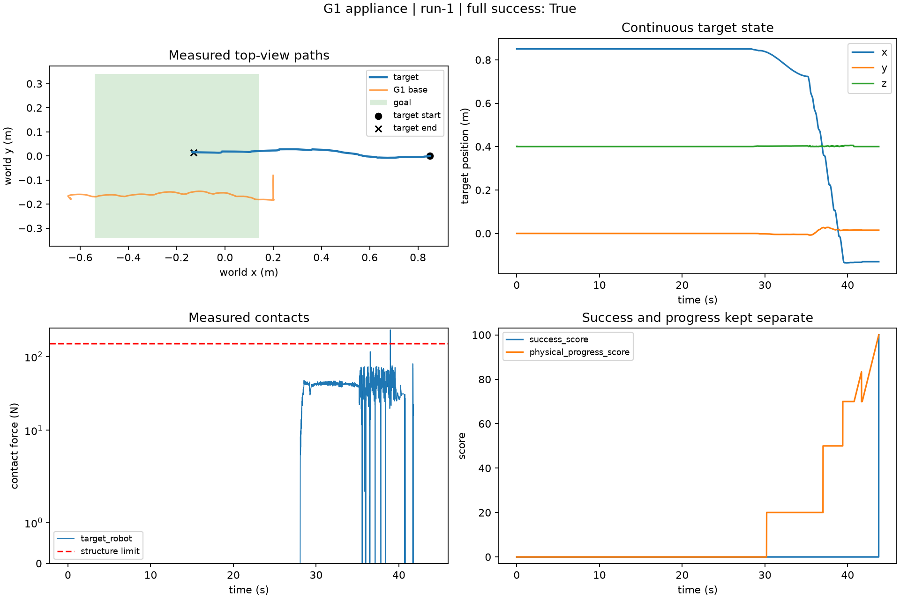
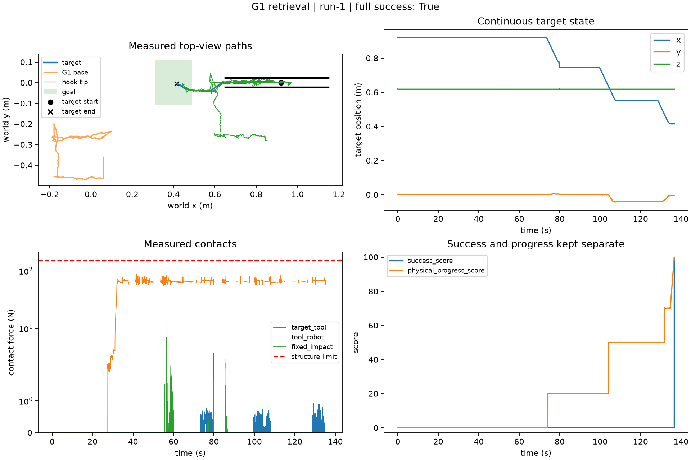

0.1.0 · 用户已批准 · 正式发布
G1 受限空间操作：冰箱移出与狭缝取物
两个任务均使用自由基座 Unitree G1 与 Dex3 手，在 Gamma GPU 上运行 Genesis 接触物理。参考解使用仿真真值；不代表公开传感器智能体评测或真机部署。
用户批准记录 · 2026-10-27
取物固定版本为 1/3 次成功，早期版本另有 0/3 批次。两项原始动作回放均失败：冰箱 24.40 秒、取物 4.86 秒。完整轨迹证明该实例存在可行解，不证明控制器稳定或随机场景泛化。53 条原始运行记录全部保留。
墙角冰箱移出
固定版本新运行完整成功
8 kg、44 × 44 × 80 cm 紧凑冰箱。背面、两侧受墙或柜子限制；通过正面横把手拉出并整体放入地面目标区。
选定轨迹: 43.76 s · 成功分 100
独立审计与动作区间狭缝工具取物
固定版本新运行完整成功
35 mm、60 g 小盒子位于 45 mm 宽的带盖窄缝中。G1 抓起 0.46 m 自由钩杆，通过最多三段短拉取出，再脱离目标。
选定轨迹: 136.66 s · 成功分 100
独立审计与动作区间高层计划 → 低层动作 → 实测轨迹
| 任务 | 专家动作组合 | 实测判据 |
|---|---|---|
| 冰箱 | 建立双脚支撑 → 抓把手 → 小幅拉出 → 带接触后退 → 松手静置 | 接触、位移、整体入区、直立支撑、两秒静置 |
| 取物 | 抓起钩杆 → 校正并插入 → 三段短拉及放开后换位 → 脱离 → 静置 | 真实工具接触、支撑交接、退出窄缝、整体入区、释放 |
两项选定成功轨迹均通过三层独立映射复核。控制目标与实测关节以 50 Hz 记录，状态和接触以 100 Hz 记录，物理积分为 200 Hz。阶段标签只划分区间，不决定评分。
实测路径、接触力与评分


独立评分
成功分为 100 × 完整有效成功；物理进展分单列。目标须整体入区、有足够支撑、与机器人和工具脱离、低速静置两秒。机器人跌倒、目标掉落或倾倒、超速、固定结构接触合力超过 150 N、非法状态修改或测量缺失均阻止成功。评分不要求复制专家动作。
随机化与证据范围
保留全部 22 个预先指定样本：每项任务 5 个低层种子、5 个高层种子和 1 个名义样本。低层改变横向位置、深度及摩擦；高层改变冰箱转运方向或取物出口/工具策略。仅两个精确名义实例为 witnessed_full，其余 20 个为 unknown；筛查不给执行分。转向及远端推动尚无已验证执行器。
名义实例的正面手爪不可达检查使用 G1 碰撞网格：腕部内切球直径约 52.37 mm，大于 45 mm 窄缝。这只约束正面直接伸手，不是全局不可达证明。
下载、审阅与复现
完整源码与证据包（533 MiB） · 离线任务页与视频 · SHA256
上方视频可直接播放；离线审阅 ZIP 也支持本地查看。解压完整包并打开 review.html 可查看全部原始尝试。包内不分发 NVIDIA 策略权重，下载工具会校验单独获取的权重哈希。
python -m unittest discover -s tests -p test_space_extraction.py python -m humanoid.g1_space_extraction.audit --run /path/to/selected/run python -m humanoid.g1_space_extraction.run --task appliance --out /new/run --video
参考解门槛 · 全部 53 条运行记录 · 文件完整性 · 迁移复核